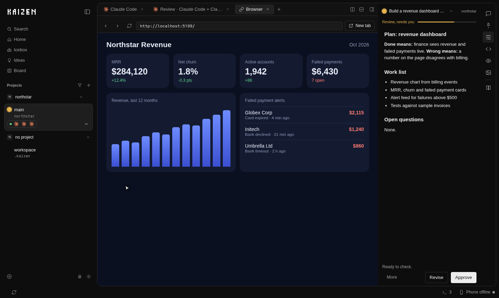
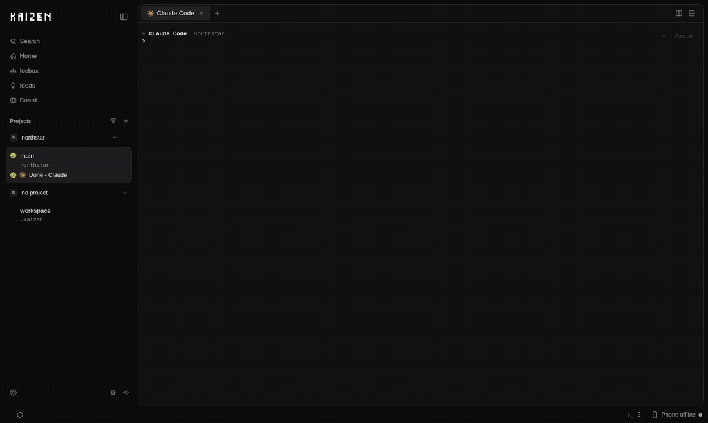
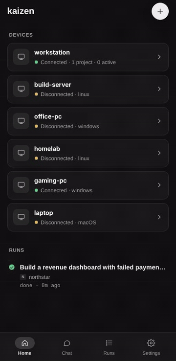

A reviewer that starts cold.
It never saw the work, so it has nothing to defend.

改善
Your agent plans it. You approve. A reviewer that never saw the work checks it.
Install kaizen
It never saw the work, so it has nothing to defend.


Claude Code reviews with a separate agent. The others run every stage in one session.
Every stage reads your project notes before it plans or builds.
Free and open for everyone. Talk to us about your team.
Call us on WhatsAppPlan. Approve. Build. Review.
curl -fsSL https://bun.sh/install | bash && ~/.bun/bin/bunx kaizen-agent
Then run kaizen setup.